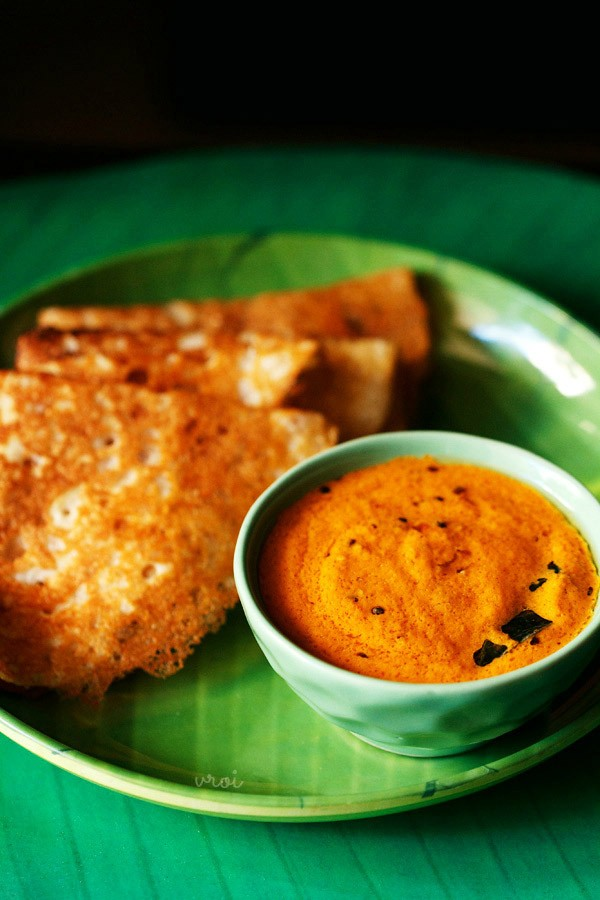

Red coconut chutney (kerala style)

Ingredients
- ⅓ cup tightly packed grated coconut
- ½ tablespoon chopped shallots or sambar onions (pearl onions)
- 2 to 3 dry red chilies - halved or broken or chopped, deseeded
- ½ inch ginger
- ¼ cup + 1 tablespoon water for grinding
- salt as required
How to make Kerala Style Red Coconut Chutney
- in a chutney grinder, take ⅓ cup tightly packed grated coconut, ½ tbsp chopped shallots (or sambar onions/pearl onions), 2 to 3 dry red chilies (halved or broken or chopped & deseeded) and ½ inch chopped ginger. If you want to tone down the raw taste of red chilies, then just roast them lightly in a pan. You can also saute them in a bit of coconut oil. Apart from ginger, you can also add garlic.
- add salt as required and ¼ cup + 1 tbsp water. You can also add water as required, depending on your grinder and its speed.
- grind to a smooth chutney.
- take the chutney in a small steel bowl or pan and keep aside.
- heat 1 tbsp coconut oil in a small pan. In the below pic, this is coconut oil which has solidified due to the winters.
- add ½ tsp mustard seeds and allow them to crackle.
- then add ½ tsp urad dal (husked black gram).
- fry the urad dal till they are a maroonish golden.
- add 8 to 10 curry leaves and 1 tbsp chopped shallots (or sambar onions/pearl onions).
- saute till the shallots are light golden. add the tempering mixture along with its oil to the red coconut chutney. tempering for red coconut chutney recipe
- Serve the Kerala style red coconut chutney with idli, dosa, medu vada or uttapam.
Go back to